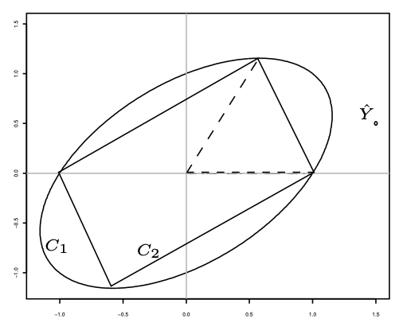
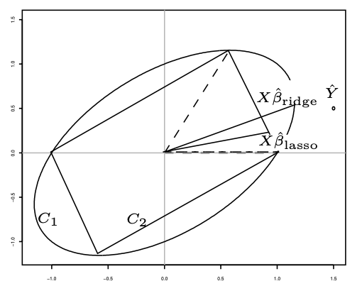
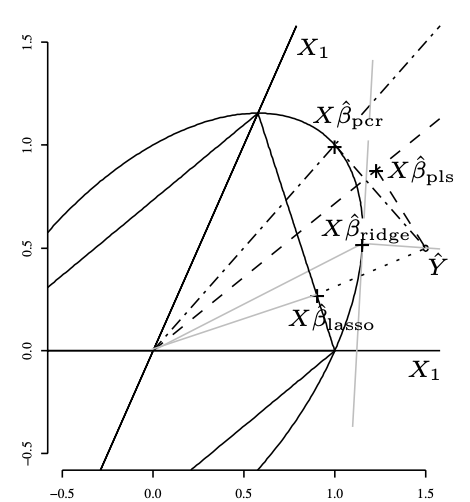

9 Régression sur composantes : PCR et PLS
Exercice 1 (Questions de cours) A, B, C, A, B (les composantes sont orthogonales donc faire des régressions univariées \(Y\) contre chaque composante \(X^{*}_{j}\) ou faire la régression multiple \(Y\) contre toutes les composantes \(X^{*}_{j}\) revient au même pour des données centrées), A, C.
Exercice 2 (Régression sur composantes) Créons une fonction pour calculer \(X^*\) et la matrice \(\Lambda^{-1}\) et \(P\)
orthonormalisation <- function(X) {
Diago <- eigen(t(X)%*%X, symmetric=TRUE)
valpos <- Diago$values>1e-10
Lambda <- Diago$values[valpos]
P <- Diago$vector[, valpos]
## X^*
Xet <- X %*% P
return(list(Xet=Xet, P=P, Lambda=Lambda))
}Créons une fonction pour
- centrer réduire
- calculer \(X^*\) et la matrice \(\Lambda^{-1}\) et \(P\) (la fonction est proposée dans le dernier exercice)
- Choisir l’ordre de présentation des coefficients
- Calculer le BIC ou l’AIC
- Retourne les coefficients sur l’échelle de départ
reg_CP_BIC <- function(X, Y, pen=log(nrow(X))) {
n <- nrow(X)
Xbar <- apply(X, 2, mean)
stdX <- sqrt(apply(X, 2, var)*(n-1)/n)
Xcr <- scale(X, center=Xbar, scale=stdX)
ortho <- orthonormalisation(Xcr)
## \hat \beta^*
betaet <- (1/ortho$Lambda * t(ortho$Xet)) %*% Y
## choix des coef non nuls
## ordre
ordre <- order(abs(betaet*sqrt(ortho$Lambda)), decreasing = TRUE)
betaetO <- betaet[ordre]
LambdaO <- ortho$Lambda[ordre]
####################
## BIC
####################
BIC <- rep(0, length(ordre))
SCR <- sum((Y - mean(Y))^2)
for (k in 1:length(ordre)){
SCR <- SCR - betaetO[k]^2 * LambdaO[k]
BIC[k] <- n*log(SCR/n) + k*pen
}
nb <- which.min(BIC)
choix <- ordre[1:nb]
betaetfin <- betaet*0
betaetfin[choix,1] <- betaet[choix,1]
####################
## RETOUR aux données
####################
betafin <- (ortho$P%*%betaetfin)/stdX
mu <- mean(Y)-Xbar%*%betafin
return(list(mu=mu,beta=betafin,nbr=nb))
}Exercice 3 (Régression sur composantes) identique
Exercice 4 (Régression sur composantes) Nous prenons ici l’ordre des composantes de l’ACP Créons une fonction pour
- centrer réduire
- calculer \(X^*\) et la matrice \(\Lambda^{-1}\) et \(P\) (la fonction est proposée dans le dernier exercice)
- Retourne les coefficients sur l’echelle de départ et sur l’échelle centrée réduite pour comparer avec la library pls.
reg_CP <- function(X, Y, K) {
n <- nrow(X)
Xbar <- apply(X, 2, mean)
# standardisation comme dans pcr
stdX <- sqrt(apply(X, 2, var))
Xcr <- scale(X, center=Xbar, scale=stdX)
ortho <- orthonormalisation(Xcr)
## \hat \beta^*
betaet <- (1/ortho$Lambda * t(ortho$Xet)) %*% Y
betaetfin <- betaet*0
betaetfin[1:K,1] <- betaet[1:K,1]
betafinpcr <- ortho$P%*%betaetfin
####################
## RETOUR aux données
####################
betafin <- (ortho$P%*%betaetfin)/stdX
mu <- mean(Y)-Xbar%*%betafin
return(list(mu=mu,beta=betafin, betaCR=betafinpcr))
}
ozone <- read.table("../donnees/ozone.txt", header=TRUE,sep=";", row.names=1)
library(pls)
modele.pcr <- pcr(O3~.,ncomp=2,data = ozone[,1:10],scale=T)
coefpcr1 <- coefficients(modele.pcr)[,1,1]
coefpcr2 <- reg_CP(ozone[,2:10], ozone[,1], K=2)$betaCR
all( abs(coefpcr1-coefpcr2)<1e-14)[1] TRUEExercice 5 (Théorème 9.2) Elle s’effectue par récurrence. Nous allons ajouter à cette propriété un résultat intermédiaire qui constituera la première partie de la propriété: \[ X^{(j)}=X\prod_{i=1}^{j-1}(I-w^{(i)}({t^{(i)}}'t^{(i)})^{-1}{t^{(i)}}'X). \] La seconde partie sera bien sûr de vérifier que \(\tilde{w}^{(j)}\) s’écrit bien sous la forme annoncée.
La propriété pour \(j=1\) : la première partie n’a pas de sens et, concernant \(\tilde{w}^{(j)}\), par construction \(X=X^{(1)}\) et donc \(\tilde{w}^{(1)}=w^{(1)}\).
La propriété pour \(j=2\) est-elle vraie ?
Nous savons que par définition \(X^{(2)}=P_{{t^{(1)}}^\perp}X^{(1)}\) et \(X^{(1)}=X\) donc \[
\begin{eqnarray*}
X^{(2)}&=&P_{{t^{(1)}}^\perp}X^{(1)}=X-P_{t^{(1)}}X
=X-t^{(1)}({t^{(1)}}'t^{(1)})^{-1}{t^{(1)}}'X\\
&=&X(I-w^{(1)}({t^{(1)}}'t^{(1)})^{-1}{t^{(1)}}'X),
\end{eqnarray*}
\] car \(t^{(1)}=Xw^{(1)}\). Ceci démontre la première partie de la propriété. Ensuite, puisque \(t^{(2)}=X^{(2)}w^{(2)}=X\tilde{w}^{(2)}\), en remplaçant \(X^{(2)}\) par \(X(I-w^{(1)}({t^{(1)}}'t^{(1)})^{-1}{t^{(1)}}'X)\) nous avons démontré la propriété pour le rang \(j=2\).
Supposons maintenant la propriété vraie au rang \((j-1)\). Nous avons par définition : \(X^{(j)}=P_{{t^{(j-1)}}^\perp}X^{(j-1)}\) donc \(X^{(j)}=X^{(j-1)}-P_{t^{(j-1)}}X^{(j-1)}\). Or par construction les \(\{t^{(k)}\}_{k=1}^j\) sont toutes orthogonales donc \(P_{t^{(j-1)}}X^{(j-1)}=P_{t^{(j-1)}}X\). Nous avons, grâce à la propriété vraie pour le rang \((j-1)\), que
\[ \begin{split} X^{(j)}&=X^{(j-1)}-t^{(j-1)}({t^{(j-1)}}'t^{(j-1)})^{-1}{t^{(j-1)}}'X\\ &=X^{(j-1)}-X^{(j-1)}w^{(j-1)}({t^{(j-1)}}'t^{(j-1)})^{-1}{t^{(j-1)}}'X\\ &=X\prod_{i=1}^{j-2}(I-w^{(i)}({t^{(i)}}'t^{(i)})^{-1}{t^{(i)}}'X) (I-w^{(j-1)}({t^{(j-1)}}'t^{(j-1)})^{-1}{t^{(j-1)}}'X) \end{split} \] démontrant la première partie de la proposition. Ensuite, puisque \(t^{(j)}=X^{(j)}w^{(j)}=X\tilde{w}^{(j)}\), en remplaçant \(X^{(j)}\) par \(X\prod_{i=1}^{j-1}(I-w^{(i)}({t^{(i)}}'t^{(i)})^{-1}{t^{(i)}}'X)\), nous avons démontré la propriété pour le rang \(j\).
Exercice 6 (Géométrie des estimateurs)
Les quatre premières réponses sont évidentes, les coordonnées de \(\hat Y\) valent \(1.5,0.5\) et \(0\). Ici \(p\) vaut 2 et \(B_1\) est un cercle de centre \(O\) de rayon 1, alors que \(B_2\) est un losange.
Intuitivement, l’image d’un cercle par une application linéaire est une ellipse et l’image d’un losange est un parallélogramme.
Le dessin suivant représente les ensembles \(C_1\) et \(C_2\) et \(\hat Y\) grâce aux ordres R suivants :
X <- matrix(c(1,0,0,1/sqrt(3),2/sqrt(3),0),3,2) sss <- 1 iter <- 1 coord <- matrix(0,500,2) for (tt in seq(-pi,pi,length=500)) { coord[iter,] <- (X%*%as.matrix(sqrt(sss) *c(cos(tt),sin(tt))))[1:2,] iter <- iter+1 } iter <- 1 coord2 <- matrix(0,500,2) for (tt in seq(-1,1,length=250)) { coord2[iter,] <- (X%*%as.matrix(c(tt,1-abs(tt))))[1:2,] coord2[iter+250,] <- (X%*%as.matrix(c(tt, abs(tt)-1)))[1:2,] iter <- iter+1 } plot(coord,type="l",xlab="",ylab="") lines(coord2)
Par définition, \(X\hat \beta_{\mathrm{ridge}}\) est l’élément de \(C_1\) le plus proche de \(\hat Y\). De même, \(X\hat \beta_{\mathrm{lasso}}\) est l’élément de \(C_2\) le plus proche de \(\hat Y\). Cela donne graphiquement 
L’ensemble \(C_1\), composé de vecteurs de la forme \(u=X_1\alpha_1+X_2\alpha_2\) avec la norme du vecteur \(\alpha\) valant 1, peut être vu comme l’ensemble des composantes dans lequel on va choisir la composante PLS. La première composante PLS est le vecteur de \(C_1\) dont le produit scalaire avec \(Y\) (et donc \(\hat Y\)) est le plus grand. Graphiquement, c’est le vecteur de \(C_1\) dont l’extrémité sur l’ellipse est le pied de la tangente à l’ellipse perpendiculaire à \(O\hat Y\). La prévision de \(Y\) par la régression PLS est la projection de \(Y\) et donc de \(\hat Y\) sur la composante PLS.
La calcul donne simplement \[ \begin{eqnarray*} X'X = \begin{pmatrix} 1&\sqrt{3}/3\\ \sqrt{3}/3&5/3 \end{pmatrix}. \end{eqnarray*} \] Les valeurs propres sont 2 et 2/3. Le premier axe principal correspond au vecteur propre associé à la valeur 2. Pour trouver la première composante principale, il faut pré-multiplier ce vecteur par \(X\). Cela donne le vecteur de coordonnées \((1,1,0)'\). Les commandes GNU-R sont
X <- matrix(c(1,0,0,1/sqrt(3),2/sqrt(3),0),3,2) svd <- eigen(t(X)%*%X) X%*%svd$vect[,1][,1] [1,] 1 [2,] 1 [3,] 0La prévision de \(Y\) par la régression PCR est la projection de \(Y\) (et donc de \(\hat Y\)) sur la composante PCR. Dans cet exemple, la projection de \(\hat Y\) sur la composante PCR est un point de l’ellipse, mais cela est uniquement dû aux données de cet exercice. Le graphique suivant représente les 4 projections :

Exercice 7 (Orthonormalisation) Créons une fonction pour calculer \(X^*\) et la matrice \(\Lambda^{-1}\) et \(P\)
orthonormalisation <- function(X) {
Diago <- eigen(t(X)%*%X, symmetric=TRUE)
valpos <- Diago$values>1e-10
Lambda <- Diago$values[valpos]
P <- Diago$vector[, valpos]
## X^*
Xet <- X %*% P
return(list(Xet=Xet, P=P, Lambda=Lambda))
}